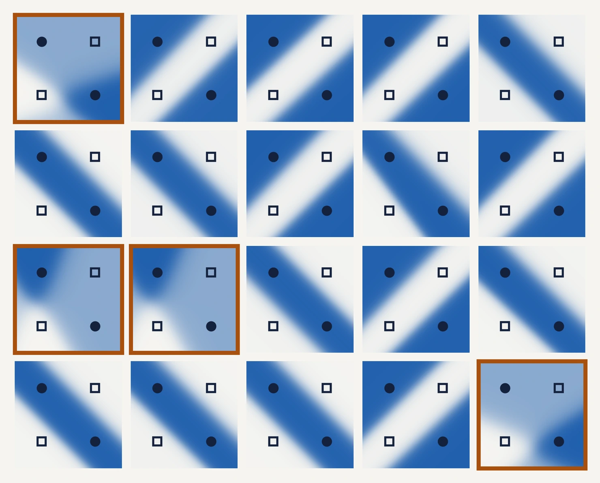
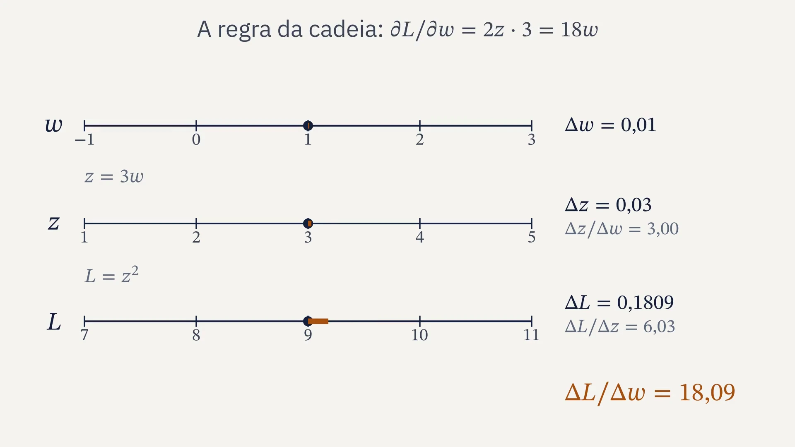
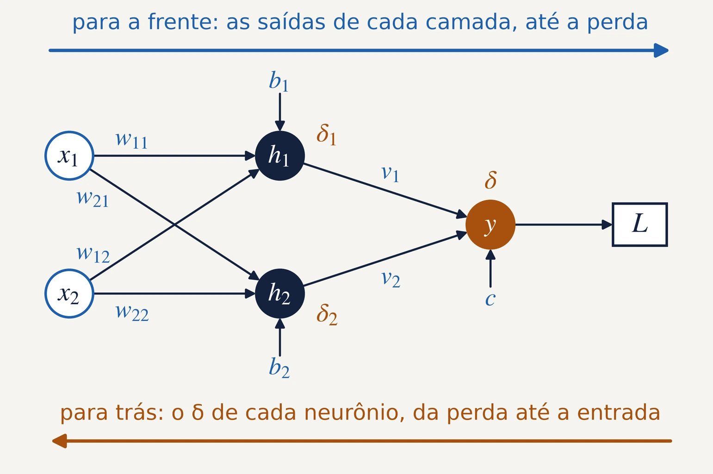
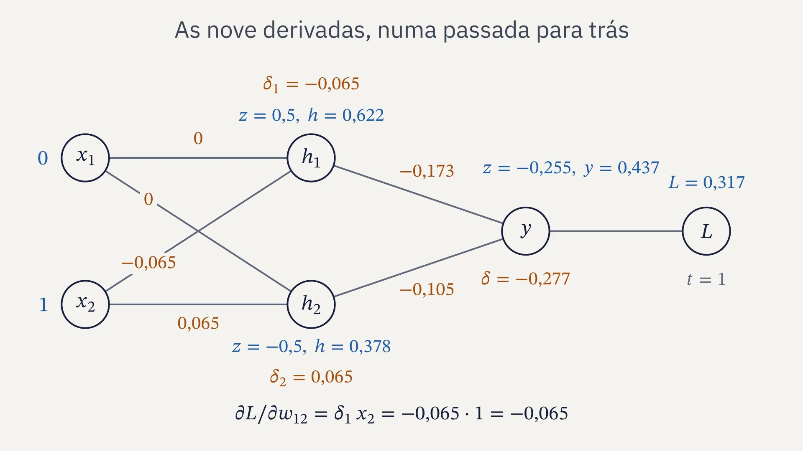
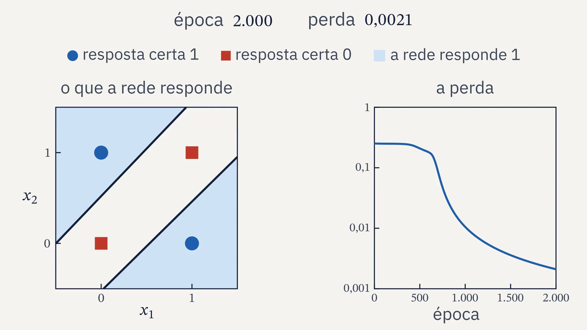
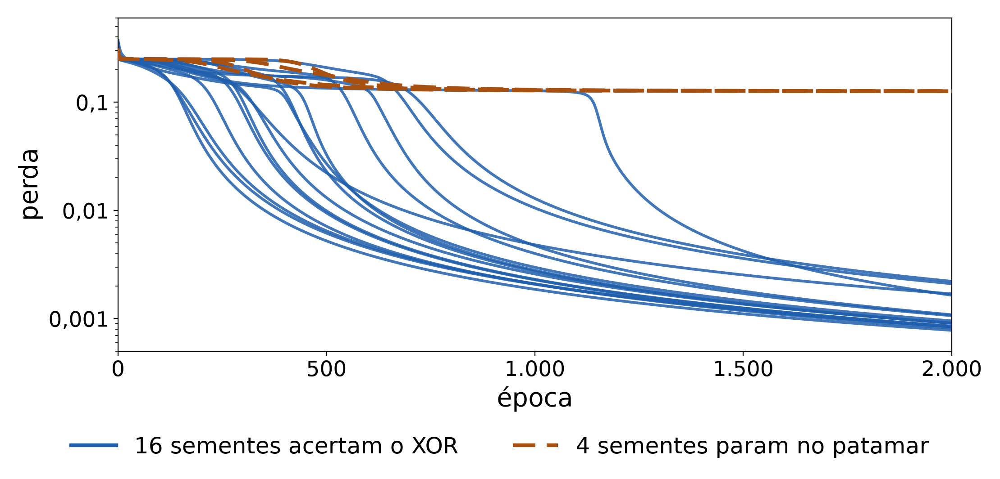
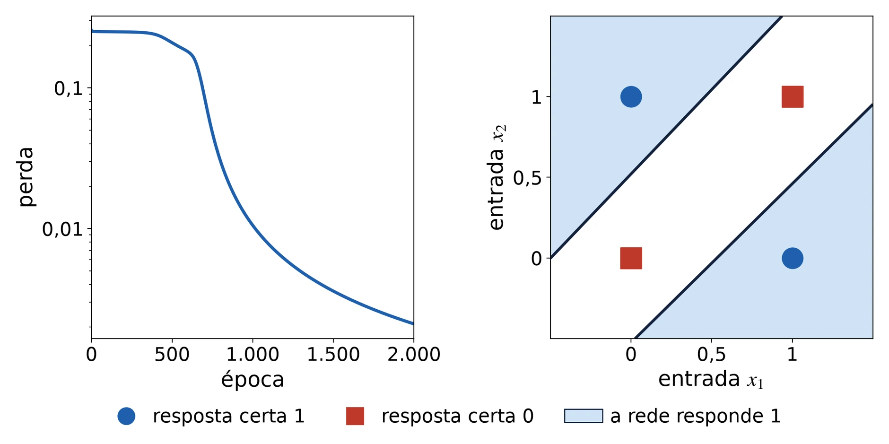

SIENA, NIPS-CERN, UFJF
Limiar
Redes neurais, do neurônio ao fractal
Aula 5: retropropagação
13/11/2026. C∴ Chrysthofer A. A. Afonso

O XOR como 20 redes iguais o aprenderam, uma por semente: azul onde a rede responde 1. Nas 4 de moldura laranja, o treino parou no patamar.
Limiar, aula 5: retropropagação


1 · Revisão
O que ficou das aulas 3 e 4, de memória
1
O que uma camada calcula, escrita como matriz?
2
Por que a camada oculta precisa de uma ativação que não seja linear?
3
O que diz a regra da cadeia?
4
Que pesos à mão calculam o XOR?
Limiar, aula 5: retropropagação
1 · Revisão
O fio do curso, da aula 1 à 10
1
O neurônio e o perceptron
um neurônio desenha uma reta, e nenhuma reta separa o XOR
25/09, presencial
2
Derivada e gradiente
o passo contra a derivada; a taxa grande demais faz o treino divergir
02/10, presencial
3
Matrizes e camadas
duas camadas separam o XOR, com pesos escolhidos à mão
13/11, on-line
4
O Jacobiano
a regra da cadeia com vetores, uma camada de cada vez
13/11, on-line
5
Retropropagação
a regra da cadeia, de trás para a frente, acha os pesos do XOR
13/11, on-line
6
O MNIST em NumPy
um MLP em 70 mil dígitos escritos à mão, com treino, validação e teste
27/11, on-line
7
PyTorch
a biblioteca faz a retropropagação; o erro final contra a taxa
27/11, on-line
8
Os dados do CERN
um MLP estima a massa dos dois múons, conferida pela fórmula
04/12, on-line
9
O fractal e o projeto
a fronteira entre a taxa que converge e a que diverge
04/12, on-line
10
A apresentação
a apresentação do projeto e a revisão do curso inteiro
11/12, on-line
Limiar, aula 5: retropropagação
2 · A regra da cadeia na rede
Como achar os nove números da rede sem escolher à mão?
A pergunta que fechou a aula 3.
Limiar, aula 5: retropropagação
2 · A regra da cadeia na rede
A regra da cadeia: as taxas se multiplicam
Um exemplo
conferido sem a regra: L = 9w², e a derivada é 18w
Um neurônio com a sigmoide, um exemplo
Limiar, aula 5: retropropagação
2 · A regra da cadeia na rede
As taxas se multiplicam

Limiar, aula 5: retropropagação
2 · A regra da cadeia na rede
Para a frente, os valores; para trás, as derivadas

O delta: a derivada da perda pela soma do neurônio
δ, delta; o da saída, para um exemplo
cada peso: o δ do neurônio aonde ele chega vezes a entrada que ele multiplica
Limiar, aula 5: retropropagação
2 · A regra da cadeia na rede
A retropropagação, com números

Limiar, aula 5: retropropagação
2 · A regra da cadeia na rede
Um passo com um exemplo só
à mão
derivada
depois
1
0
1,000
1
−0,065
1,130
1
0
1,000
1
0,065
0,870
−0,5
−0,065
−0,370
−1,5
0,065
−1,630
1
−0,173
1,345
−1
−0,105
−0,791
−0,5
−0,277
0,054
O exemplo (0; 1), sozinho; o passo é novo = velho − η · derivada, com η = 2.
entrada
certa
antes
depois
(0; 0)
0
0,424
0,616
(0; 1)
1
0,437
0,672
(1; 0)
1
0,437
0,659
(1; 1)
0
0,424
0,681
A saída sobe nas quatro entradas, também onde a certa é 0. A perda dos quatro piora: de 0,249 para 0,267.
Limiar, aula 5: retropropagação
3 · Conferir e treinar
Os quatro exemplos de uma vez
a perda dos quatro é a média; a derivada também
(0; 0)
(0; 1)
(1; 0)
(1; 1)
perda
resposta certa
0
1
1
0
antes
0,424
0,437
0,437
0,424
0,2488
um passo, só (0; 1)
0,616
0,672
0,659
0,681
0,2670
um passo, os quatro
0,449
0,468
0,468
0,459
0,2448
200 passos, os quatro
0,188
0,816
0,816
0,202
0,0359
Os pesos da aula 3, que erravam com a sigmoide, acertam o XOR em 200 passos com os quatro exemplos.
Limiar, aula 5: retropropagação
3 · Conferir e treinar
A retropropagação confere com a derivada numérica
derivada
retropropagação
numérica
0,001178
0,001178
0,000624
0,000624
0,002585
0,002585
0,001618
0,001618
−0,002508
−0,002508
0,005113
0,005113
0,018787
0,018787
0,015281
0,015281
0,026299
0,026299
semente 1, nos pesos iniciais
Derivada numérica
duas passadas para a frente por parâmetro: 18 nesta rede
Retropropagação
uma passada para a frente e uma para trás, para os nove de uma vez
Limiar, aula 5: retropropagação
3 · Conferir e treinar
A retropropagação acha os pesos do XOR

Limiar, aula 5: retropropagação
3 · Conferir e treinar
Nem toda semente chega

Vinte sementes, vinte sorteios dos pesos iniciais, com η = 2 e 2.000 épocas: 16 acertam o XOR, e 4 param com a perda perto de 0,126, respondendo 0,5 em duas entradas.
Limiar, aula 5: retropropagação
4 · De onde vem
1986: Rumelhart, Hinton e Williams
“Em consequência dos ajustes dos pesos, unidades internas, ‘ocultas’, que não fazem parte da entrada nem da saída, passam a representar características importantes do domínio da tarefa.”
Rumelhart, Hinton e Williams, Nature, 9 de outubro de 1986, tradução livre
- a retropropagação, em quatro páginas da Nature
- a conta de trás para a frente é mais antiga: Linnainmaa, 1970; Werbos, 1974
- Hinton dividiu o Nobel de Física de 2024 com John Hopfield
Da esquerda para a direita: Paul Werbos e David Rumelhart, em 1991, fotos de Rolf Kickuth, CC BY-SA 4.0; Geoffrey Hinton, em 2013, foto de Eviatar Bach, CC BY-SA 3.0. Wikimedia Commons.
Limiar, aula 5: retropropagação
5 · O código
A retropropagação em NumPy, passo a passo
1
Os quatro exemplos do XOR e a semente que sorteia os pesos
2
A passada para a frente com a sigmoide, guardando a saída de cada camada
3
A retropropagação: o δ da saída, o δ de cada neurônio oculto, as nove derivadas
4
Cada derivada conferida pela derivada numérica, antes de treinar
5
O laço do gradiente descendente, guardando a perda de cada época
O NumPy que resolve
X @ W.T + b
1 / (1 + np.exp(-z))
s * (1 - s)
H.T @ delta
com X, os quatro exemplos de uma vez, um por linha
Limiar, aula 5: retropropagação
5 · O código
O que a entrega pede

O XOR treinado com a própria retropropagação, em NumPy, com as nove derivadas conferidas pela derivada numérica. A semente, a taxa e as épocas vão junto com o resultado.
Limiar, aula 5: retropropagação
6 · Fechamento
Para estudar e entregar
Estudo
- 3Blue1Brown, redes neurais, capítulo 3
- 3Blue1Brown, redes neurais, capítulo 4
- PyTorch, “Learn the Basics”
Entrega
- o XOR treinado com a própria retropropagação, em NumPy
- o gradiente conferido pela derivada numérica
- uma pergunta sobre o estudo
A seguir
- aula 6: o MNIST em NumPy, com treino, validação e teste
- aula 7: o PyTorch faz a retropropagação sozinho
Limiar, aula 5: retropropagação